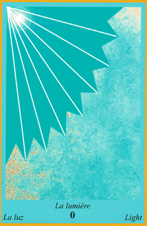
0 - La Lumière
Le jour, la clairvoyance, la lucidité, vous serez capable de dissiper les mensonges et les tromperies, votre œil sera vif et perçant.
La lumière sera faite sur des choses ou des événements que l'on a cherchés à vous dissimuler.
On viendra vers vous pour avoir des réponses.
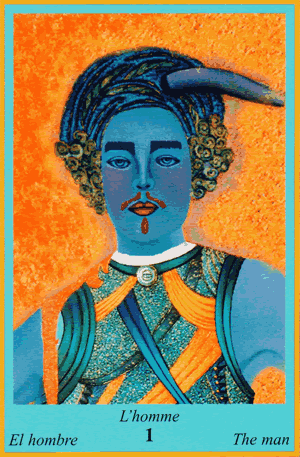
1 - L'Homme
Le partenaire, le conjoint, le côté masculin. Si vous êtes un homme, vos idées et vos actes seront reconnus à leur juste valeur. Si vous êtes une femme, vous serez figure d'autorité et le fer de lance devant votre entourage masculin.
Votre force physique et morale sera au beau fixe et rien ne vous arrêtera.
Message : soyez fort(e) et gardez les deux pieds sur terre.
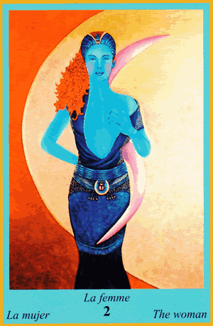
2 - La Femme
La partenaire, la conjointe, le côté féminin. Si vous êtes un homme, vous devez laisser votre côté féminin s'affirmer et être à l'écoute de votre sensibilité. Si vous êtes une femme, votre féminité risque d'être à fleur de peau, attention à ne pas laisser vos émotions prendre le dessus sur la raison.
Votre côté féminin est au cœur de vos actes.
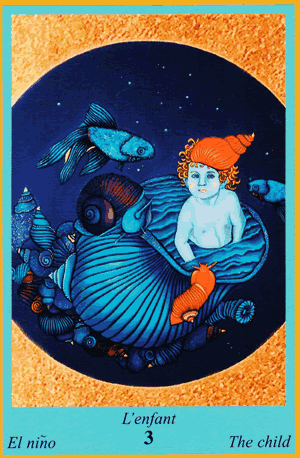
3 - L'Enfant
Un jeune homme ou un enfant, un projet naissant va avoir une importance forte dans votre vie.
Vous êtes au début d'un acte déterminant qui commence de zéro.
Pensez à regarder à l’intérieur de vous pour bien mettre en place ce qui pourrait bien conditionner votre futur.
Message : toutes grandes œuvres commencent par un petit projet.
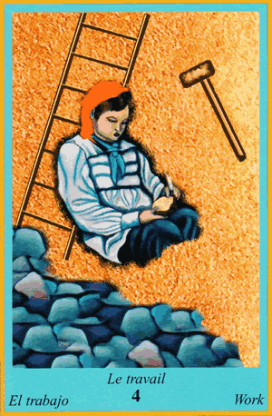
4 - Le Travail
Cette carte de l'Oracle Bleu évoque un lieu de travail, des collègues de travail, l'introspection. Votre environnement direct dans le domaine du travail a une importance cruciale, attention aux conflits avec vos collègues ou votre hiérarchie. Vous avez besoin de faire un travail sur vous-même afin de digérer les changements qui se sont récemment opérés en vous.
Votre personnalité est en mouvement vers un changement positif et constructif.
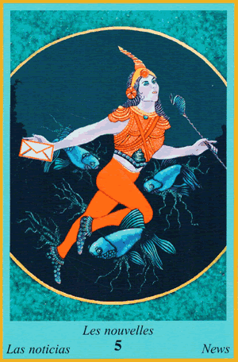
5 - Les Nouvelles
Le courrier, les mails, les SMS et toutes communications par écrit.
Vous allez recevoir ce type de contact prochainement et vous devrez faire attention au contenu de ces messages. Attention aux quiproquos et aux mauvaises interprétations.
Message : soyez lucide, écoutez votre raison.
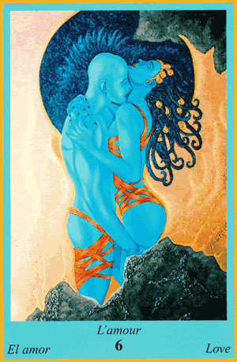
6 - L'Amour
Cette carte de l'Oracle Bleu évoque le contact physique, la satisfaction de soi avec l'autre. Que vous soyez homme ou femme, vous allez ressentir de grandes vibrations et un grand besoin d'aimer et d'être aimé(e). Vous allez être dans un état de grande sensibilité physique, un simple contact pourrait vous bouleverser.
Message : laissez-vous aimer, c'est l'ouverture à votre amour pour les autres.
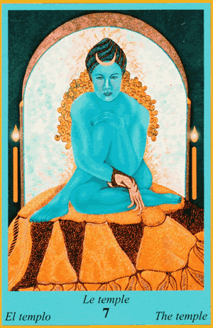
7 - Le Temple
Le refuge de solitude, l'introspection, le repli sur soi pour méditer et se retrouver. Vous serez dans un état de compréhension profonde qui vous fera paraître rêveur(euse) ou introverti.
Un grand besoin de recherche sur vous-même s'annonce à l'horizon, ménagez vos colères et vos rancœurs afin de vous apaiser.
Message : bâtissez votre temple de méditation intérieure, il vous sécurise et vous en êtes seul(e) propriétaire.
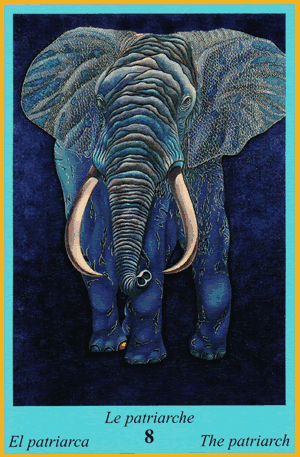
8 - Le Patriarche
La force, la puissance, la virilité, le père ou le grand-père. Vous êtes influencé par une personne très charismatique et qui peut vous guider dans une décision ou une voie à suivre, mais vous pouvez aussi être cette personne que l'on écoute et suit.
Prenez conscience des conseils que l'on vous prodigue et n'hésitez pas à partager votre savoir.
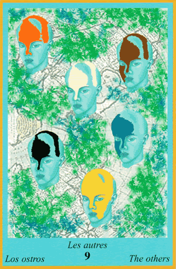
9 - Les Autres
Cette carte de l'Oracle Bleu évoque l'introversion, la timidité, le groupe de personnes, la foule. L'image que vous renvoyez aux autres est d'une grande importance pour vous : ne vous dévalorisez pas, reprenez confiance en vous et vous brillerez aux yeux de ceux qui vous entourent.
Vous serez le centre d'un cercle, rassemblez vos forces et vous en sortirez grandi.
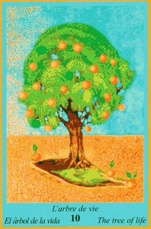
10 - L'Arbre de Vie
La famille, le foyer, l'enracinement de ce qui n'était pas stable. La famille sera au centre de vos préoccupations et de vos intérêts, mais elle vous apportera aussi beaucoup. Ressoudez les liens s'ils se sont fragilisés, prenez le temps de profiter de votre entourage proche.
Message : la famille et les amis sont une grande source d'énergie positive.
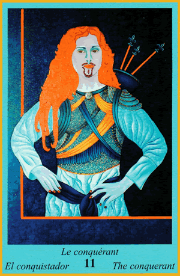
11 - Le Conquérant
La personne de pouvoir, le chasseur, l'influenceur.
Prenez garde, vous allez être mis(e) en présence d'une personne dominante qui va chercher à vous influencer et à vous faire prendre des décisions qui vont à l'encontre de vos idées et de vos convictions.
Message : ne vous laissez pas caresser par de belles promesses bien trop alléchantes.
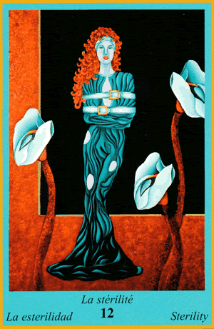
12 - La Stérilité
Cette carte de l'Oracle Bleu évoque le blocage, l'impossibilité, l'impasse. Des ralentissements dans vos projets risquent de stopper votre progression. Ce n'est que temporaire, mais vous devrez donner toute votre force pour résoudre ces soucis et trouver de nouveaux chemins.
Message : quand un mur se dresse devant vous, il suffit parfois de le contourner plutôt que de chercher à le détruire.
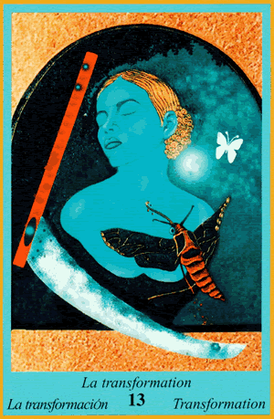
13 - La Transformation
Les modifications personnelles, d'opinions. Vos certitudes seront mises à mal, il vous faudra regarder les choses sous un nouvel angle, ce nouvel œil vous fera évoluer et aller de l'avant.
Message : il ne faut pas avoir peur du changement, il est plus souvent positif que l'on ne le croit.
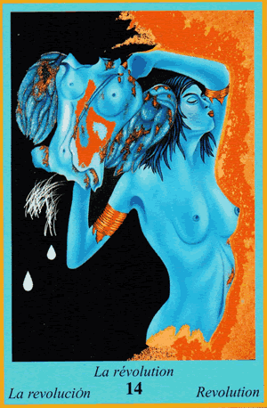
14 - La Révolution
Les très grands changements personnels et d'opinions. Vous avez envie de tout casser pour tout reconstruire comme bon vous semble, rien ne vous arrête, vous foncez tête baissée pour bousculer l'ordre établi.
Message : vous n'avez pas peur du changement, il faut qu'il arrive et tout de suite.
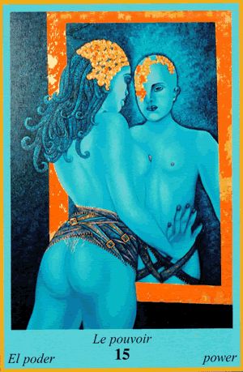
15 - Le Pouvoir
Cette carte de l'Oracle Bleu évoque l'importance que les autres ont sur vous ou que vous avez sur eux, beaucoup d'influences gravitent autour de vous. Dans le premier cas, attention à ne pas vous laisser influencer par de belles paroles. Dans le deuxième cas, ne perdez pas de vue que votre parole peut influencer les points de vue des autres.
Message : vous avez une force de persuasion et une grande responsabilité, faites-en bon usage.
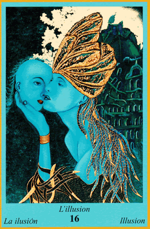
16 - L'Illusion
Mensonges, vérités cachées, intimidations. Vous serez en mesure de comprendre et de discerner les voiles posés sur une vérité ainsi que les mensonges volontaires, vous êtes armé(e) pour ne pas vous laisser influencer.
Message : ayez du recul sur les informations qui vous arrivent.
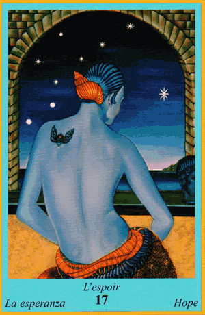
17 - L'Espoir
L'espérance, le besoin de combler un vide. Prenez le temps de réfléchir sur des événements qui vous tiennent à cœur mais sur lesquels vous n'avez pas d'emprise, prenez de la distance avec ce qui encombre vos pensées sur l'avenir.
Message : prenez de la hauteur et dissociez bien le besoin et l'envie.
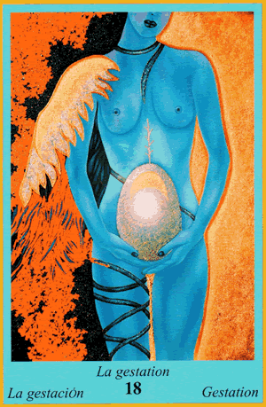
18 - La Gestation
Cette carte de l'Oracle Bleu évoque un projet d'enfant, un besoin de materner, un besoin de créer. Vous êtes empli(e) d'énergie créatrice, vos idées fusent. Vous trouvez les bons outils pour entrer dans une phase de construction personnelle et matérielle.
Message : vous êtes le bâtisseur de votre propre avenir.
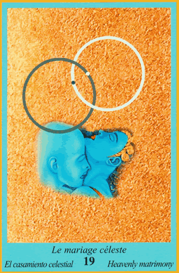
19 - Le Mariage Céleste
L'amour, l'union, la compréhension spirituelle. C'est une force d'amour très forte et souvent nouvelle, tout est fluide : les mots, les gestes, la communication et l'acceptation. Voilà une carte qui symbolise parfaitement l'amour inconditionnel.
Vous allez ressentir un amour fort, perdu ou inconnu au-delà de vos repères physiques.
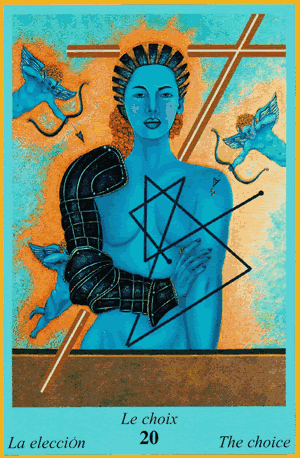
20 - Le Choix
Les différentes possibilités, la multiplication des chemins. La situation se débloque, des opportunités s'ouvrent devant vous, vous sortez d'une impasse. Si vous êtes déjà face à différents choix, prenez du recul et pesez le pour et le contre.
Message : prendre de la hauteur vous fera prendre les bonnes décisions.
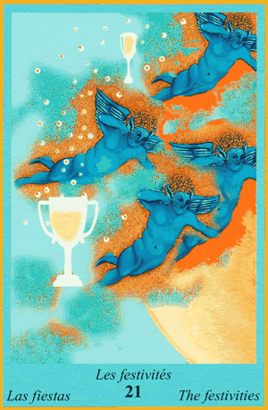
21 - Les Festivités
Cette carte de l'Oracle Bleu évoque les anniversaires, mariages, fêtes de fin d'année : un événement arrive et sera l'occasion de réunions festives (invitation, spectacle, concert...). Vous serez d'humeur à aller à la rencontre des autres et à profiter de l'instant présent.
Message : sortez, amusez-vous, vous le méritez et ce sera bénéfique autant pour vous que pour votre entourage.
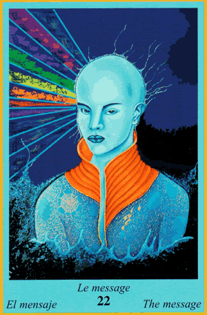
22 - Le Message
L'information importante, les indices. On vous donnera de quoi décrypter une situation, mais soyez très attentif(ve) : ce genre de message arrive de manière subtile et ce sera à vous de le voir et de le comprendre.
Message : soyez attentif(ve) aux signaux qui vous sont envoyés.
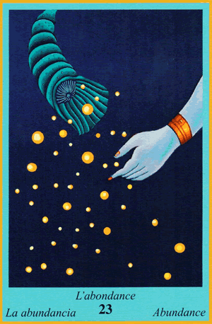
23 - L'Abondance
La récompense due à la réussite, sortir d'une situation de manque et de privation. Vos efforts vont enfin payer et vous allez bénéficier d'un retour sur vos investissements personnels et financiers, une rentrée d'argent est à venir.
Message : la récompense est au bout des projets que vous avez mis en place.
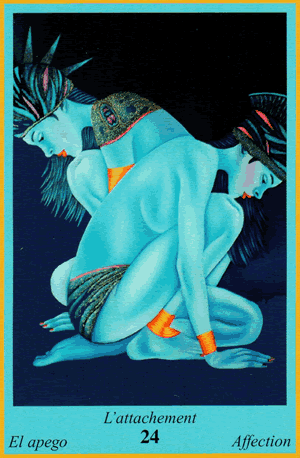
24 - L'Attachement
L'importance d'avoir quelqu'un à vos côtés, la peur de vous retrouver seul(e). Vous avez besoin de vous sentir entouré(e), accompagné(e), c'est une phase très importante de vos envies.
Message : pensez à garder le contact avec les autres, un petit message peut raviver un sourire.
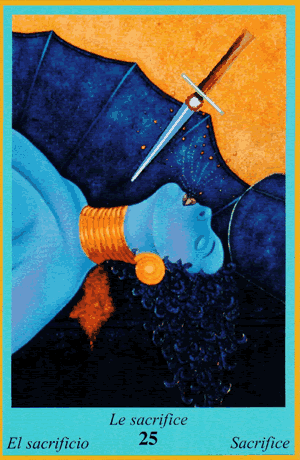
25 - Le Sacrifice
Cette carte évoque l'importance de faire un choix, une décision à prendre, faire preuve de raison. Vous allez devoir faire face à une situation qui vous demandera de renoncer à vos envies ou projets, mais cela peut être un mal pour un bien afin de trouver de nouvelles directions.
Message : il faut parfois lâcher du lest pour pouvoir s'élever.
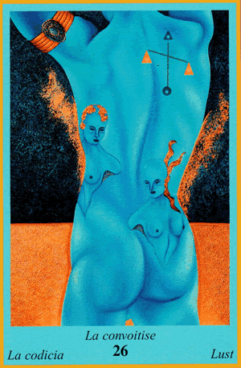
26 - La Convoitise
La beauté, l'admiration, le narcissisme. Ne soyez pas aveuglé(e) par ce qui vous éclaire trop facilement, vous pourriez vous brûler les ailes. Attention à l'image que vous donnez de vous, soyez humble.
Message : tout ce qui brille n'est pas d'or.
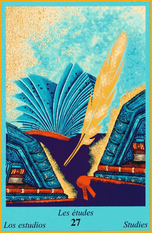
27 - Les Études
Les écrits, la formation, l'apprentissage. Si vous avez commencé des études, vous devez persévérer et ne pas baisser les bras. Si l'on vous propose une formation, n'hésitez pas, foncez.
Vous allez apprendre de nouvelles choses importantes pour votre avenir. Votre soif de savoir sera comblée.
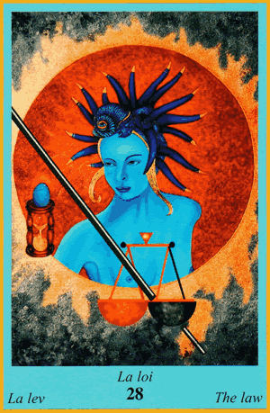
28 - La Loi
Le juge, l'avocat, la justice. De l'ordre sera mis dans votre vie, justice sera rendue. Attention à régulariser tout ce qui doit l'être afin de ne pas avoir affaire à la justice. Vous pourriez être amené(e) à contacter un professionnel de la loi pour vous épauler.
Message : faites bien attention à l'équilibre des choses.
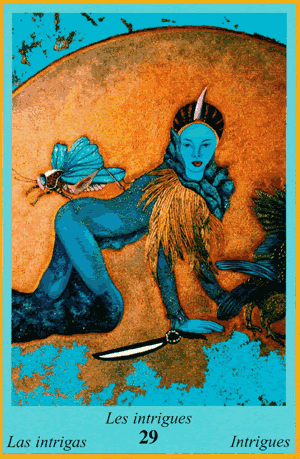
29 - Les Intrigues
Cette carte de l'Oracle Bleu évoque le mensonge, la tromperie, l'abus de confiance. Des choses vous seront cachées, soyez vigilant(e). Des personnes peu dignes de confiance vont graviter autour de vous prochainement.
Message : prenez le temps d'analyser votre environnement afin de déceler les failles.
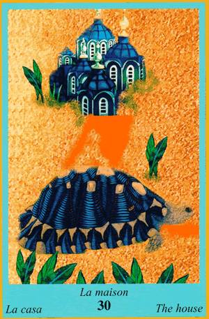
30 - La Maison
Le lieu d'habitation, la solidité, la sécurité. Prenez soin de votre habitat, il renferme ce et ceux que vous aimez. Soyez ordonné(e) afin de créer le lieu de vie idéal, vous pouvez même bousculer vos habitudes et réaménager votre foyer.
Message : quelques petits changements vous feront voir la vie autrement.
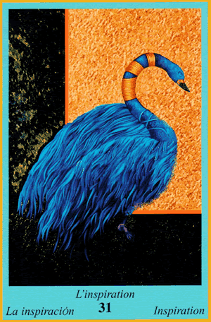
31 - L'Inspiration
Les idées nouvelles, le nouveau souffle. Vous allez être touché(e) par la grâce de la créativité, vous fourmillez d'idées et serez un modèle pour les autres. Vous bousculerez les principes trop terre à terre.
Vous regardez loin devant vous pour vous positionner au-dessus de ce qui existe déjà.
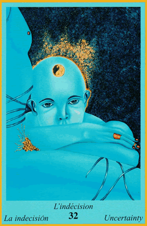
32 - L'Indécision
Cette carte évoque le doute, la difficulté d'un choix. Plusieurs possibilités se présentent à vous et vous hésitez. Accordez-vous un temps de réflexion afin de peser le pour et le contre.
Message : soyez à l'écoute de ce que vous dit votre cœur, il vous montrera la voie.
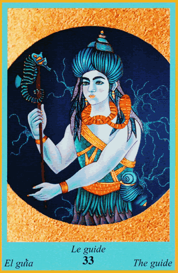
33 - Le Guide
Celui qui dirige, qui connaît le chemin. Deux possibilités : soit vous suivez celui qui vous guide, soit vous êtes celui que l'on suit. Dans les deux cas, c'est une situation très bénéfique.
Vous serez porteur ou récepteur du savoir. Le partage est une grande richesse, ouvrez-vous à lui.
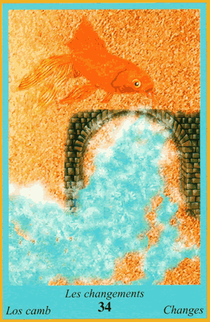
34 - Les Changements
Mouvements des choses et des personnes. Vous allez modifier vos habitudes, vos fréquentations, vos acquis. De grands bouleversements s'annoncent, parfois un déménagement.
Votre vie et vos habitudes vont être secouées, mais vous en sortirez grandi.
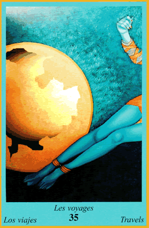
35 - Les Voyages
Déplacements, vacances. Vous allez voyager assez loin de votre domicile, soit pour le travail, soit pour les loisirs. Un besoin de changement se fait ressentir, l'envie de couper avec la routine.
Message : changez d'air, cherchez de la nouveauté, cassez la routine.
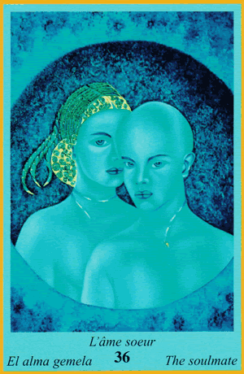
36 - L'Âme Sœur
L'amour fort, divin, exceptionnel. Vous êtes en présence de votre jumeau d'esprit, la personne avec qui vous n'avez pas besoin de parler pour vous comprendre. En présence d'une âme sœur, tout devient intense et fluide.
C'est l'une des plus belles rencontres qui soit pour qui sait aimer.
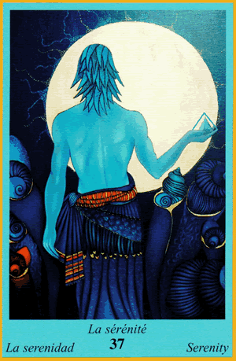
37 - La Sérénité
Bien-être profond et stabilité dans le corps et l'esprit. Vous allez vous sentir confiant(e) et plein(e) de forces neuves. Vos doutes s'évanouissent pour laisser place à des réponses bienvenues.
Message : ouvrez les yeux sur le monde, il vous paraîtra différent.
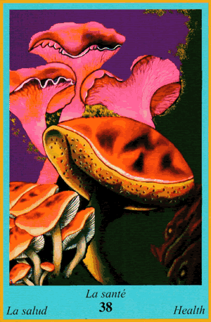
38 - La Santé
Cette carte évoque le soin de soi et des autres, mais aussi la fatigue et l'abattement. Attention à votre force vitale, n'en faites pas trop et pensez à vous reposer afin de vous ressourcer.
Message : prenez de l'élan avant de vous élancer, vous gagnerez en efficacité.
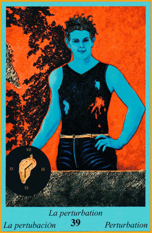
39 - La Perturbation
Les mauvais événements, les personnes malintentionnées, la jalousie. Attention à votre entourage, certaines personnes pourraient souhaiter vous voir échouer.
Message : un homme averti en vaut deux, tenez-vous sur vos gardes.
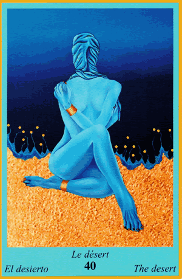
40 - Le Désert
La solitude, la longue attente d'une réponse. Vous passez par une période de doute et la sensation d'être seul(e) ou mis(e) à l'écart. C'est une période courte mais qui peut impacter votre moral.
Message : prenez votre mal en patience, le bout du tunnel est proche.
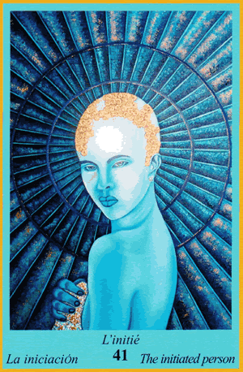
41 - L'Initié
Celui qui sait, qui possède le savoir et qui le transmet. Vous allez rencontrer une personne qui vous communiquera des enseignements précieux. Si vous êtes dans le partage du savoir, vous serez initié à votre tour.
Message : le savoir est une force, le partager est une chance.
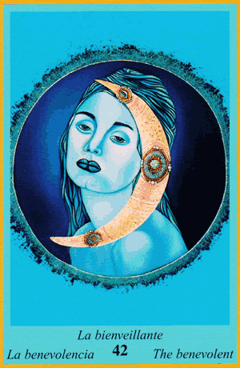
42 - La Bienveillance
Cette carte évoque le côté maternel et l'amitié féminine. Soyez réceptif(ve) au bien-être qui vous est prodigué et laissez parler votre côté protecteur. Vous avez probablement besoin de vous sentir aidé(e) et soutenu(e).
Message : baissez votre garde et laissez l'amour des autres vous atteindre.
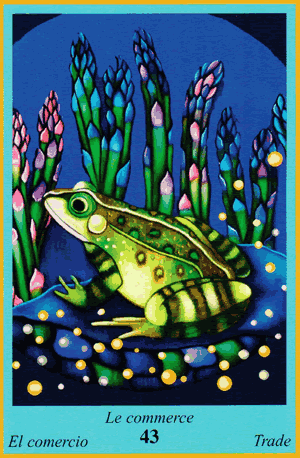
43 - Le Commerce
Les transactions, les lieux de vente, les affaires. Votre aisance dans les négociations est à son niveau le plus haut. Vous allez conclure des transactions ou remporter des contrats attendus.
Votre force de persuasion est accompagnée d'une excellente énergie.
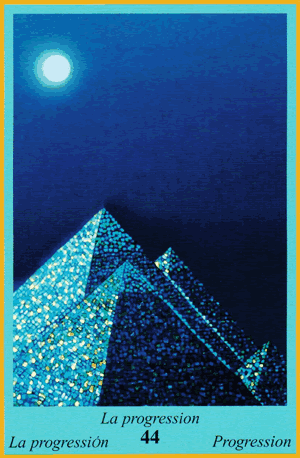
44 - La Progression
Passer un niveau, s'élever. Vous êtes sur un axe montant : promotion, augmentation ou concrétisation. Vos efforts au travail seront enfin récompensés.
Message : tout paye un jour, même si vous avez l’impression que l'attente est longue.
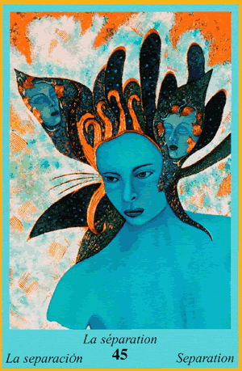
45 - La Séparation
L'éloignement, la division, le morcellement. Attention à ce que vous pensiez acquis : consolidez les fondations de votre vie. Vous avez fait preuve de relâchement ces derniers temps, ressaisissez-vous.
Message : consolidez ce que vous aimez pour le pérenniser.
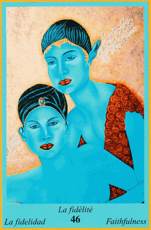
46 - La Fidélité
Cette carte évoque la sincérité, la confiance et le dévouement. Vous êtes une personne fiable et vous savez vous entourer de personnes sincères. En équipe, une belle dynamique commune vous fera avancer ensemble.
Message : la force du groupe vous ouvrira de nouveaux horizons.
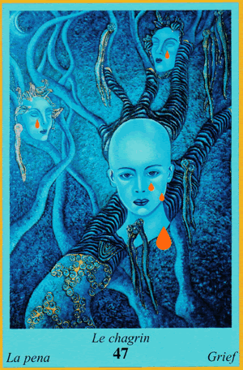
47 - Le Chagrin
Tristesse, mélancolie, abattement. Vous allez passer par une période difficile et fatigante, reposez-vous et prenez le temps de vous ressourcer. Face à cette épreuve, faites preuve de force.
Message : il faut parfois passer par la tristesse pour apprécier de nouveau la joie.
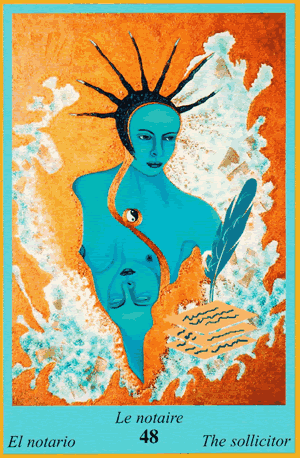
48 - Le Notaire
Professionnel de la loi, administration. Vous entrez dans une période positive pour la signature de documents ou de contrats (crédit, achat immobilier...).
Message : n'hésitez pas à vous faire aider, vouloir avancer seul sans expertise peut mener à une impasse.
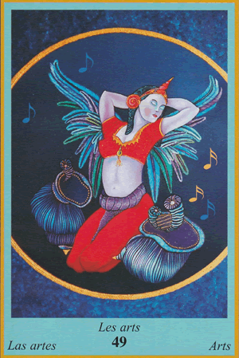
49 - Les Arts
Écoutez de la musique, dansez, chantez, peignez ! Faites quelque chose de créatif.
50 - La Ville
Milieu urbain, environnement animé. Selon votre sensibilité, cela peut paraître oppressant ou rassurant. Vous serez entouré(e) de monde dans les jours à venir.
Message : ne craignez pas la foule, sachez en tirer le meilleur.
51 - La Campagne
Cadre rural, verdure, calme. Vous aurez besoin de vous mettre au vert et de vous isoler dans les prochains jours pour vous ressourcer.
Message : ne craignez pas la solitude, apprivoisez-la pour en tirer de la force.
52 - La Mer
Lieu entouré d'eau, vacances, plage. Période de repos et de réflexion. Vous devez penser à votre forme physique et morale, lâcher du lest et vous retirer de l'agitation quotidienne.
Message : pensez à vous reposer, votre efficacité diminue avec la fatigue.
53 - La Montagne
L'air pur, la hauteur, les sommets. Regardez vers le haut et contemplez les grands espaces afin de vous sentir libéré(e) de tout poids. Profitez des moments d'accalmie pour vous ressourcer.
Vous allez retrouver la forme pour avancer de plus belle.
54 - Le Printemps
Carte de temps. Renouveau, sortie de crise. Période idéale pour remettre les choses à plat et repartir sur de nouvelles bases avec l'énergie de la belle saison.
Vous allez vous sentir comme une personne neuve, fortifiée et éveillée.
55 - L'Été
Carte de temps. Chaleur, épanouissement, liberté. Le soleil brille sur vos projets et vous sortez d'une période de doute. L'avenir s'annonce lumineux.
Message : profitez de cet instant pour reprendre les rennes de votre vie.
56 - L'Automne
Carte de temps. Période de transition, ralentissement. Vous entrez dans une phase exigeant plus de patience. Préparez-vous sereinement, ce ne sera qu'une formalité.
L'automne symbolise aussi la fin d'un cycle qui peut s'avérer très bénéfique.
57 - L'Hiver
Carte de temps. Le froid, la purification, le ralentissement. Les événements prennent du retard, il faudra composer avec la patience. C'est le moment idéal pour faire le tri et ordonner votre vie.
Message : profitez de ce calme pour aménager votre environnement et construire un nid douillet.
58 - La Duplication
L'éparpillement, la dispersion. Ne tentez pas de tout faire en même temps au risque de vous perdre. Resserrez vos objectifs et concentrez-vous sur un chemin à la fois.
Message : choisissez un objectif, atteignez-le, puis passez au suivant.
59 - Le Cadeau
Présent, belle surprise, opportunité. Vous allez recevoir une excellente nouvelle inattendue. Très bon présage pour une alliance ou un partenariat professionnel fructueux.
Message : exprimez votre gratitude aux personnes qui vous soutiennent.
60 - La Jeune Fille
Jeunesse féminine, spontanéité, parfois manque de maturité. Attention à l'insouciance. Une jeune femme peut jouer un rôle important dans votre entourage sous peu.
Message : soyez à l'écoute des conseils et faites preuve de maturité.
61 - Le Jeune Homme
Jeunesse masculine, énergie, parfois impulsivité. Attention aux réactions irréfléchies. Un jeune homme aura une importance particulière dans vos préoccupations à venir.
Message : soyez à l'écoute des retours et canalisez votre impulsivité.
62 - L'Eau
Carte élémentaire. Mouvement, sensibilité, émotivité. Vos émotions sont très vives : accordez-vous un temps de relaxation et ne forcez pas le cours des choses.
Message : la patience sera votre meilleure alliée.
63 - L'Air
Carte élémentaire. Mouvement, légèreté, réflexion. Période propice au changement de perspectives et aux déplacements. Une remise en question vous permettra d'évoluer.
Message : laissez-vous porter par le changement, ne réagissez pas avec rigidité.
64 - La Terre
Carte élémentaire. Ancrage, bases solides, concrétisation. Le moment est idéal pour stabiliser une situation. Vos projets se développent de manière durable.
Message : vous entrez dans une période propice au rôle de bâtisseur.
65 - Le Feu
Carte élémentaire. Passion, énergie intense, action. Vous sortez de votre réserve pour vous affirmer pleinement, aussi bien sur le plan professionnel que sentimental.
Vous iriez de l'avant avec une confiance renouvelée.
66 - Le Monde Effondré
Déception, fin de cycle, désillusion. Il est temps de reconstruire sur de nouvelles bases. Redoublez d'efforts pour mettre en place des projets plus solides.
Message : ne baissez pas les bras, cette épreuve permettra un renouveau essentiel.
67 - Le Monde Minéral
Concrétisation, consolidation. Vos efforts et votre patience portent enfin leurs fruits, la situation se tasser de manière très solide.
68 - Le Monde Végétal
Sensibilité, réceptivité. Vous pourriez vous sentir plus irritable ou à fleur de peau, mais de bonnes nouvelles viendront vous apaiser.
Message : prenez du recul et laissez glisser les petites contrariétés.
69 - Le Monde Animal
Instinct, besoin d'indépendance et de liberté. L'envie d'échapper à la routine et d'explorer de nouveaux horizons se fait sentir.
Message : suivez votre instinct, il saura vous guider.
70 - Le Premier Pas
Initiative, action, mouvement. Il est temps de vous lancer, de proposer vos idées et d'oser la nouveauté.
Message : il n'y a que le premier pas qui coûte.
71 - La Nuit
Obscurité, mystère, ce qui est dissimulé. Période favorable aux sorties nocturnes mais aussi invitation à percer les secrets environnants.
Message : sachez faire la lumière sur ce qui reste caché.
72 - L'Élévation
Progression, réussite, responsabilités accrues. Une carte très puissante qui indique un passage au niveau supérieur (promotion, succès, reconnaissance).
Message : faites vos preuves, vous avez toutes les cartes en main pour réussir.